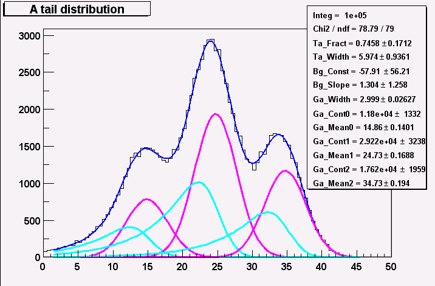

What to display for histogram
This allows to adjust what items should be shown when displaying a histogram like title, statistics box etc.How to display a 1-dim histogram
Here error bars, filling and contours may be choosen. Fitting of Gaussian optionally with linear background when dragging with mouse button 1 pressed can be switched on and off here.How to display a 2-dim histogram
ROOT has many different ways to plot a 2-dim histogram like boxes all sorts of lego plots etc.Various HistPresent options
These options are described in some detail below. Help_on_ShowFitted Help_on_RemParTrees Help_on_RememberLastSettings Help_on_RememberZoomings Help_on_AttrMacro Help_on_RegExp Help_on_Auto_1dim Help_on_Auto_2dimHistPresent numerical options
LogScale_Minimum This allows to set the minimum when logarithmic sales are used AutoUpdateDelay This is the update frequency when using the automatic update option.Default window sizes and positions
Default sizes of windows for 1-dim and 2-dim histograms may be adjusted seperately. Units are in pixels. Each new window is shifted according to the values of Window_Shift_X and Y starting at Window_Top_X and Y. The window size of histgram lists can be adjusted by the value of WindowXWidth_List as follows: > 0 : take value as it is in units of pixels = 0 : take default value (250) -1 : calculate width to fit longest item without using a scrollbar The parameter Project_Both_Ratio determines the space left for the original scatter plot when the the Display action ProjectBoth is used.Default colors and fonts
This allows to set various colors and fonts.Display fitted curves
This option controls which curves are drawn if a function is fitted to a 1_dim histogram. (see Help_on_Fit_1dim_Menu) This function is normally is a sum of several components (Gauss, linear background). As default only the sum of the components are drawn. If this option is active all components are shown allowing a better visual control of the fit. An example is given Remember hist limits when showing trees
When displaying trees (ntuples) limits for histograms (number of channels, lower, upper edge), these values may be remembered for each tree entry between sessions.Help_on_RememberLastSettings
Remember expand settings (set via marks), calibrations etc. This option allows to remember for the same and future sessions: expand limits, log scales, axis titles, calibrations i.e. the values of the lower and upper edge of a 1-dimensional histogram. Zoomings done by dragging the left mouse in the scale are not remembered by this option. To do achieve this the option RememberZoomings must be activated.Help_on_RememberZoomings
Pressing the left mouse button in the scale of a histogram dragging to the required limit allows to zoom in the picture. Note: The cursor symbol must a hand with forefinger. This option allows to pass these limits to later sessions.Invoking attributes macro
Each time a histogram is displayed a macro (FH_setdefaults.C) may be executed. This macro may be edited from the HistPresent start menu: EditAttrMacro This option can be switched on or off.Use Regular expression syntax
Normally wild card syntax (e.g. ls *.root to list all files ending with .root) is used in file/histo selection masks. One may switch to the more powerful Regular expression. For details consult a book on Unix.Auto exec macro 1-dim
A macro (default name auto_exec_1.C) is executed when the left mouse button is pressed in a pad containing a 1-dim histogram. The default behaviour is as follows: In a pad with several hists: display this hist enlarged On a histogram contour: print info for this channel In the statistics box: print full statistics On a function: print its parameters.Auto exec macro 2-dim
A macro (default name auto_exec_2.C) is executed when the left mouse button is pressed in a pad containing a 2-dim histogram. The default behaviour is as follows: In a pad with several hists: display this hist enlarged When the mouse is moved: Open a new window and display a histogram containing the projection on the x-axis taking only the channels with the y-values pointed to by the mouse. This feature can be switched by the options: Auto exec project X and Auto exec project Y